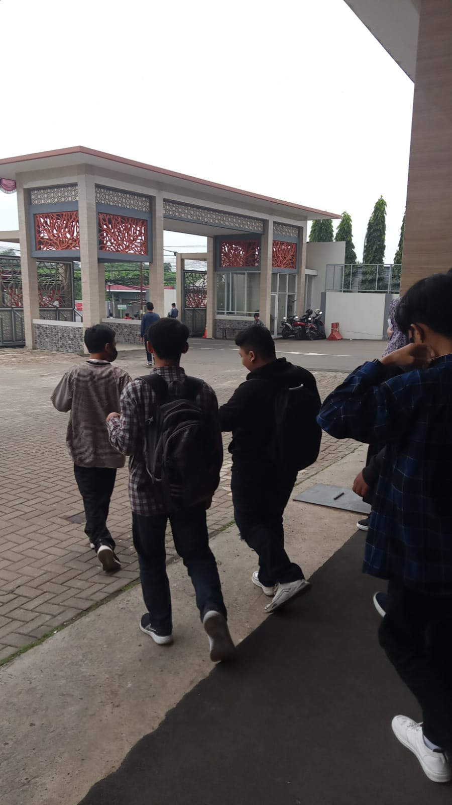

Awal Perjalanan di Dunia Teknik
Petualangan saya di dunia teknologi dimulai saat saya duduk di bangku Sekolah Menengah Kejuruan (SMK) Sasmita Jaya 2. Selama tiga tahun, saya menggali lebih dalam tentang Teknik Elektronika Industri. Dunia komponen, rangkaian listrik, dan berbagai alat elektronik begitu memikat hati saya. Tak hanya itu, saya juga mulai berkenalan dengan dunia pemrograman. Bahasa pemrograman dasar menjadi teman setia saya dalam mengeksplorasi logika dan kreativitas dalam membangun suatu sistem.
Menjejakkan Kaki di Perguruan Tinggi
Setelah lulus SMK, saya melanjutkan studi ke Universitas Pamulang 2. Di sini, saya semakin mantap mengasah kemampuan pemrograman, khususnya bahasa C++. Bahasa pemrograman ini menjadi fondasi kuat bagi saya untuk memahami konsep-konsep pemrograman yang lebih kompleks.
Menemukan Minat Baru
Dua semester berlalu, rasa ingin tahu saya semakin besar. Saya mulai tertarik pada bagaimana cara membuat sebuah aplikasi atau website terlihat menarik dan mudah digunakan. Dari situlah, saya mulai mempelajari desain antarmuka pengguna (user interface). Dunia desain yang penuh warna dan interaksi menarik perhatian saya. Saya pun memutuskan untuk fokus pada pengembangan web bagian depan (frontend), di mana saya bisa langsung melihat hasil karya saya.

Langkah Awal Karier
Setelah menyelesaikan semester 3, saya mulai mencari pengalaman kerja. Berbagai lamaran magang dan pekerjaan saya kirimkan, namun belum ada yang berbuah hasil. Namun, semangat saya tidak pernah padam. Akhirnya, sebuah kesempatan emas datang. Saya diajak bekerja sama dengan rekan-rekan di Inside Job sebagai pekerja harian lepas di bagian desainer antarmuka pengguna. Ini adalah langkah awal yang sangat berarti bagi saya untuk terjun langsung ke dunia kerja dan mengembangkan karier di bidang yang saya minati.
Sekian
Pesan Terakhir
Potongan Video ceramah ustadz M.Nurudin tentang takdir